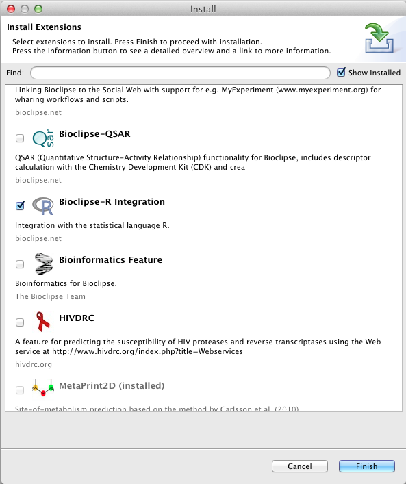

Bioclipse-R is a set of plugins for Bioclipse. There are two ways to obtain a Bioclipse-R package:
Please see links available from the Bioclipse development update site.
This guarantees the latest version of Bioclipse and Bioclipse-R.
Bioclipse is available from www.bioclipse.net, see the installation page for more information.
After installing Bioclipse, start it and go to the menu Install > New Feature.... Check Bioclipse-R Integration and press finish, and after restart you have Bioclipse-R installed.
